2005.4.
民話の里、遠野には様々な民間信仰が存在する。 ひとつひとつは特別珍しいものではないが、観光客にも手軽に参拝出来るように整備されているのは遠野ぐらいのモノだろう。 どっちかというと他の自治体では「こんな邪教を未だに信じてて恥ずかしいだす」という扱いだったりするみたいなので。 で、そんな観光地を回って来ました。題して珍寺的遠野物語。 ・・・チョットおこがましいですか・・・
卯子酉様 卯子酉様は縁結びの神様だという。境内（というより畑の一画の林といった風情だが）の木にはたくさんの赤い布が吊るされている。 これは純粋な信仰が生み出したのかというと、そうでもなく、観光客が願い事を書いてさげているものも多い。 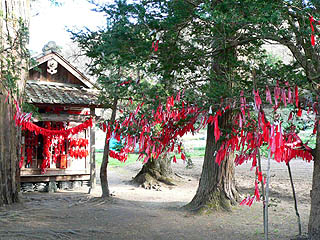 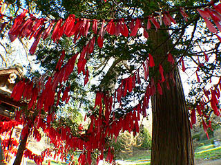 実はここには十年以上前に来た事がある。その時も赤い布の群れに驚いたものだが、その時よりも布が増えているような・・・ いずれにせよ、ビジュアル的にはかなり強烈な光景だ。 前回、今回ともこの卯子酉様が遠野のイメージとして一番象徴してる気がする。 というか、東北の信仰世界全体の印象が、この赤い布に集約されているのかも知れない。 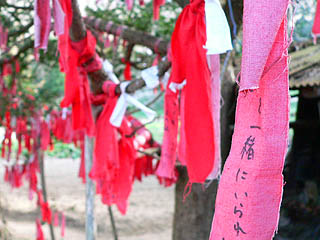 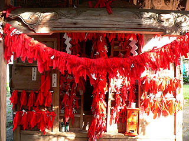 恋愛関係の願い事が多い。こういうヌルい願い事は見ていても真剣さがあまり感じられないが、それはそれでライトな神様っぽくていいのだ。 そんなな願いも数が集まればこんなにヘビーな眺めになるという事。 鈴の紐にも赤い布が付けられていて何だか分からなくなっている。 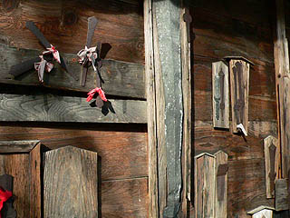 祠の脇には早池峯神社で見た鉄剣が奉納されていた。こちらはマジな祈願だろう。
北川家のオシラサマ 遠野といえばオシラサマ。 東北地方全域に分布する神でそのほとんどは各家庭に祀られている。 遠野物語では馬と娘の悲恋譚として紹介されているオシラサマ。北川家では実際に信仰されているオシラサマが見学出来る。 オシラサマは男女一対で祀られるもので、一般的には木製の棒状の神像だ。しかし、その棒状の神像にはオセンダクと呼ばれる布が毎年1枚づつ重ねられていくので見た目にはテルテル坊主みたいなカタチになっている。 オシラサマには2種類の形状があり、棒の先にある顔の部分ごと布で包む形状のものを包頭型、布に切れ目を入れて頭を出す形状を貫頭型という。 遠野では包頭型と貫頭型の両方が存在している。ここ北川家のオシラサマも貫頭型2対包頭型1対であった。 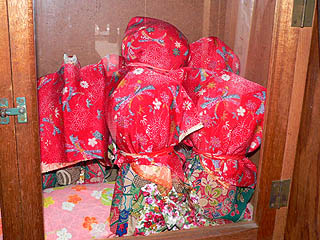 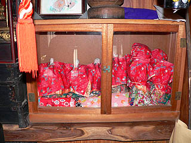 オシラサマは普段、飾っておくが、小正月にはオシラアソバセといって新しい布を足し、子供と遊んだりするらしい。 北川家の方に伺ったところ、これらの行事や普段の管理はすべて女性が行うという。 しかも生理中はオシラサマの世話が出来ない決まりのため、自然とお婆さんとコドモがオシラサマの面倒をみるようになっているそうだ。 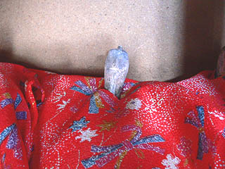 それにしても何故、包頭型と貫頭型が混在しているのだろうか？一番最初にオシラサマをつくった時点でこれは包頭型にしようとか貫頭型にしようとか決まっているのだろうか？包頭型と貫頭型で御利益や祀り方が違うのか、というと特に差はないという。 オシラサマの隣には笈があった。元々の先祖は山伏だったという。 コレを背負って山を飛び跳ねていたのだろうか。 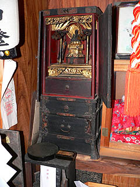 持ち上げさせてもらったら結構軽かった。 モバイル系仏具に目がない私、オシラサマよりこっちの方が印象的だった。
伝承園 遠野の観光施設は渋い。予備知識がなくても遊べるテーマパークや遊園地に馴れ切った観光客では遊び切れないマニアックな展示が多い。 民俗学や民話に興味がない人には、一体、どう楽しんでいいのかも分からないような観光施設ばかりだ。正しいぞ、それでいいのだ。 人に楽しませてもらおうなどと思っているのなら、浦安に行けっつーハナシですわ。 古い民家である南部曲り屋を屋外展示している伝承園もそんな硬派の観光施設のひとつだ。 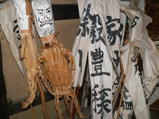 メイン展示は南部曲がり屋。ある意味他の観光地では成り立たないような渋い観光施設である。 中にはワラ人形やカマド神などが展示、というよりポーンと置いてある。その素っ気無さが演出だとしたら恐ろしい。 で、ここの最大の見物はオシラサマが千躰展示されているという御蚕神堂（おしらどう）だ。曲がり屋の室内を歩いていると、廊下で御蚕神堂につながっている。 まるで古い民家にはみんな千体オシラサマがあるんだぞ、とでもいいたげだが、勿論オシラサマを千体も祀る家などあるはずもない。 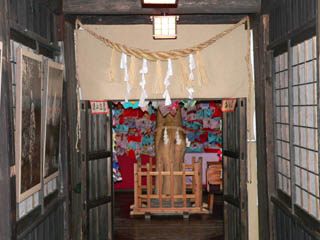 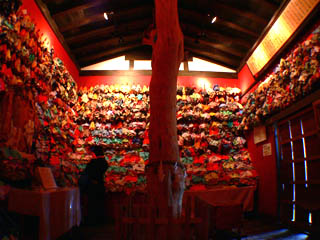 壁一杯に掲げられたオシラサマ。展示用の演出とはいえ強烈な印象がある。 東北の信仰形態を如実に表現したかのような展示だ。 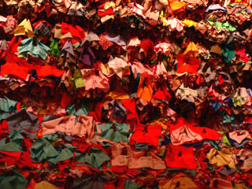 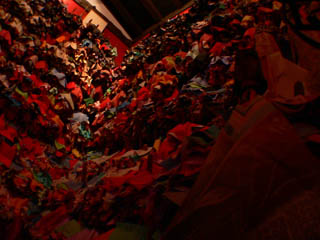 オシラサマはすべて貫頭型。 机の上には布が置かれていて願い事を書いて奉納するそうだ。 ・・・いっておくがこれはあくまでも観光客向けのもので、実際に信仰されているオシラサマには間違っても願い事など書いてないので念のため。 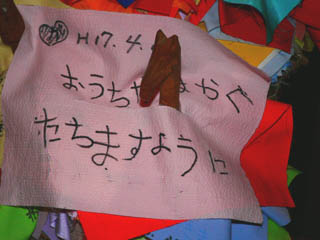 おうちがはやくたつといいですね。 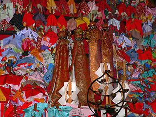 何故か青森の久渡寺型のオシラサマもあった。こちらはオブザーバーという事か。 これを見ると遠野の（というか東北全般に分布している一般的な）オシラサマと久渡寺型のオシラサマは大きさが全く違うという事が分かる。
福泉寺 伝承園から早池峰山方面に北上すると五重塔が見えて来る。 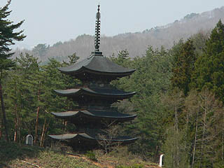 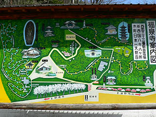 福泉寺という寺だ。 ここは大正元年に出来た、何というか、凄く遠野に似つかわしくない立派な寺だ。 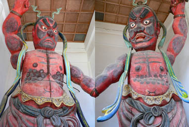 山門の仁王像を見て一瞬金縛り。 頬や額、腕の内側が黒いのは影、って事なのかあ？なんだかガラスに押し付けられているみたいな仁王さんである。 あと、腹に描いてあるたくさんの丸も気になるんですけど・・・パンチ腹毛？ 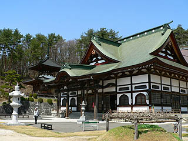 境内は広大なので車で回る。 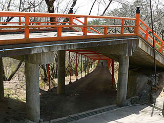 歩きの人のルートはこちら。ミャンマーの寺みたいだ。 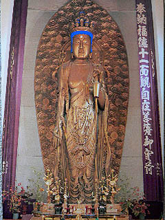 さて、これが大観音である。撮影禁止だったので絵葉書の写真を載せてみました。 日本すきま漫遊記の福泉寺の項でも指摘されているが、大観音の納まっている場所が外から見た本堂のスケール感をはるかに超えている。 どうやって納まっているのかというと・・・ 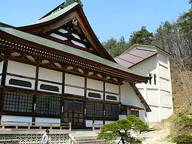 本堂の後ろに大観音が納まる別の建物が連結していたのだった。
乳神様 乳神様は文字どおり乳の出が良くなるようにお参りする神様である。 で、奉納するモノといえば・・・ 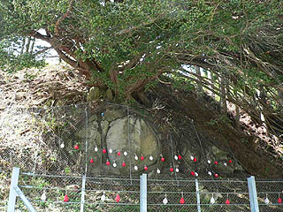 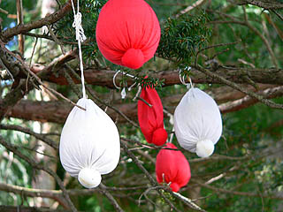 ハイ、勿論、乳型です。紅白の布で作った乳型がいくつも木から垂れ下がっている。 勿論切実な悩みを抱えてココに来る人も多かろうが、何となくユーモラスな眺めだなあ。 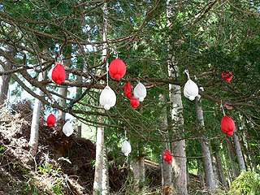 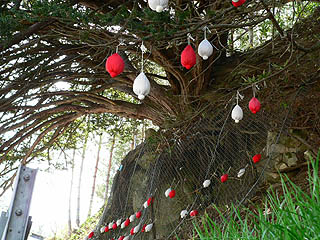 この木は崖に生えていて、その下は車道なので枝に取り付けるのはかなり困難だ。 そのため大抵の乳型は崖崩れ防止用のネットに吊るされている。そのネットに取り付けるのさえもかなり難しそうだ。 そう考えると、ユーモラスとか言ってられないですね。
常堅寺 土淵にある常堅寺はカッパ狛犬がある寺として有名だ。 遠野を回っていて観光客が沢山押し寄せているのを見た唯一の観光スポットだった。 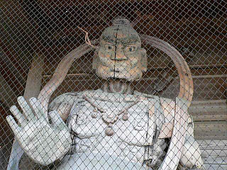 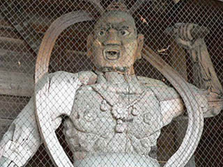 山門の仁王像は早池峰神社から移転してきたもの。もともと早池峰神社は神仏合習の神社だったので仁王像があったのだが明治の神仏分離令により神社に仁王はまずかろう、という事でここに来たらしい。福泉寺もそうだが遠野の仁王像はなんでこんなに変なんだろう。 で、山門を潜るとすぐ左手にカッパ狛犬がいる。 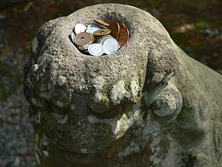 カッパ狛犬の頭にはお賽銭が入ってました。ここにお賽銭を入れる気持ち、良く分かります。 狛犬の後ろには十王堂。冥界の裁判官が揃い踏み。 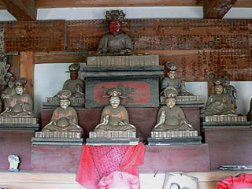 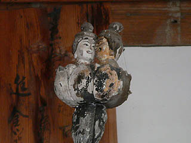 男女の頭部が付いている人頭杖もある。これは裁判の際に良い事をすれば白い顔の口から蓮華が、悪い事をすれば怖い顔の男性が火を吹くという。 ・・・だったら白い顔の人、大火傷じゃないっすか。 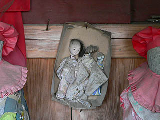 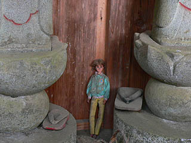 十王堂にはお地蔵さんも並んでいる。その足元には髪や頭のとれた人形やワタル君などが奉納されていた。 で、本堂。 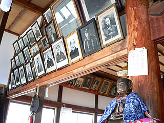 本堂にはたくさんの遺影が掲げられていた。 供養絵額の項でも述べたが、これは化真といい、葬式に使用された遺影を菩提寺に奉納する習俗だ。 この遺影奉納は現在では殆どの寺がやらなくなってしまったが、この常堅寺では今でも遺影を受け付けている遠野でも数少ない寺だ。 見ているこちらが見られているような気分になる。 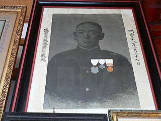 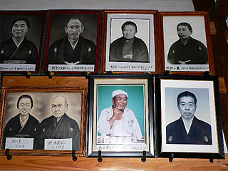 左の化真は軍人さん。勲章が色紙で作られてガラスの上から貼ってある。勲章を付けた写真がなかった、という事は戦死して後から勲章を貰ったという事なのだろうか。 右のオトウサンの遺影はかしこまった遺影が並ぶ中で一番印象的だった。こんなリラックスした遺影もいいものですな。 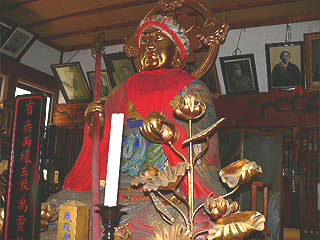 本堂には立派なお地蔵さんがいた。お地蔵さんといえば帽子にヨダレ掛け。立派すぎるお地蔵さんだけにこれらのアイテムがチョット似合ってない。 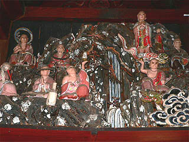 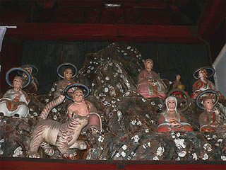 内陣の後ろの欄間には半立体の羅漢ジオラマが左右にあった。 後光がとれて土星みたいになっちゃっている羅漢さんも見受けられるぞ。 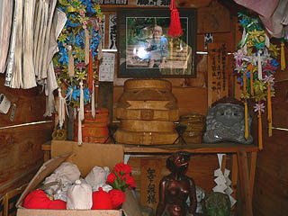 で、寺の裏手にあるカッパ淵にあるお堂。 おっ！手前の箱に入っているのは乳神様じゃあないですか。
山崎のコンセイサマ コンセイサマ（金精様）とは陽根信仰の一種でそのものズバリのカタチをしている。 ここ、山崎のコンセイサマも御神体は立派な陽石だ。 賽銭箱にもそのものズバリのイラストが描かれている。 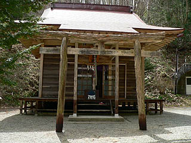 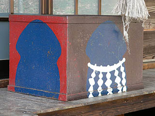 御神体には注連縄が巻かれ周りにはたくさんの幟が下がっている。ここにもまた布大量垂れ下がり系のビジュアルイメージが。 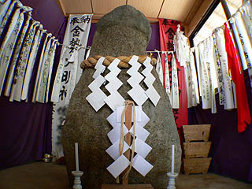 御神体の左には神輿状の木製の陽根があった。また田懸神社の写真なども飾っており、ただの地元の素朴なコンセイサマというよりも志はグローバルチンコ神を目指している感がある。頑張って下さい。 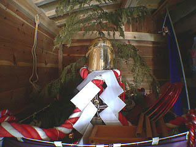 屋外にも立派なのがありました。 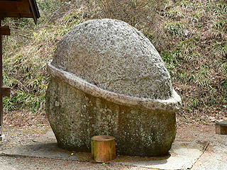
墓 遠野には様々な宗教が混在する。それは仏教民間信仰神道だけではない。 昔の姿にこだわらず、現在進行形で民話が生まれて来るダイナミズムがこの地域にはあるのだろう。 早池峰山をバックに建つキリスト教（ロシア正教？）の墓。これもまた遠野の姿なり。
2005.4.
珍寺大道場 HOME